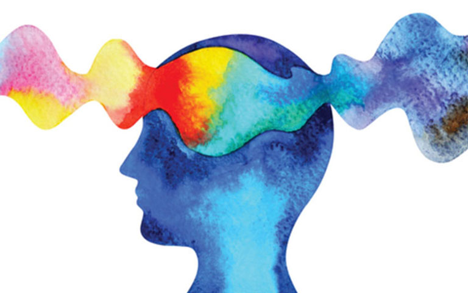

Mental Illness Stigma, Help Seeking, and Public Health Programs
Claire Henderson PhD || May 11, 2013
Increasing evidence gests that significantly greater barriers exist to receipt of mental health
care in comparison with physical health care.
Worldwide, more than 70% of young people and adults with mental illness do not receive any mental
health treatment from health care staff. The difference between true prevalence and treated prevalence
can be called the treatment This article describes the roles that stigma and discrimination
contribute to the treatment and assesses the evidence that public health approaches to stigma
and discrimination can facilitate access to mental health care. We present new data from the evaluation
of Time to Change, England’s largest ever program to reduce mental illness stigma and discrimination.
"
Addressing public stigma might reduce experienced and anticipated stigma among
services users and facilitate help seeking and engagement with mental health care
"
Evidence suggests that factors increasing the likelihood of treatment avoidance
or delay before presenting for care include (1) lack of knowledge to identify features
of mental illnesses, (2) ignorance about how to access treatment, (3) prejudice against
people who have mental illness, and (4) expectation of discrimination against people diagnosed
with mental illness. Stigma and discrimination and their influence on access to care may vary based
on experience of mental distress or other sociodemographic factors. For instance, psychotic disorders
are highly stigmatizing, and people with psychosis are more likely to be perceived as violent and
unpredictable relative to people with other mental health problems.

Addressing public stigma might reduce experienced and anticipated stigma among services users and
facilitate help seeking and engagement with mental health care. For example, individual service users
living in countries with higher rates of help seeking and treatment utilization, in addition to better
perceived access to information about how to deal with mental health problems and less stigmatizing
attitudes, tended to have lower rates of self-stigma and perceived discrimination. Globally, however,
stigmatizing attitudes persist among the public and have been shown to be prevalent and associated
with a reluctance to seek help. Specifically, beliefs about effectiveness of treatment and services
at the start of treatment have been shown to influence subsequent treatment behavior. This is
significant because currently individuals often only access services once they have already experienced
significant impairment, clinical symptoms, and stigma, and these effects may be difficult to reverse.